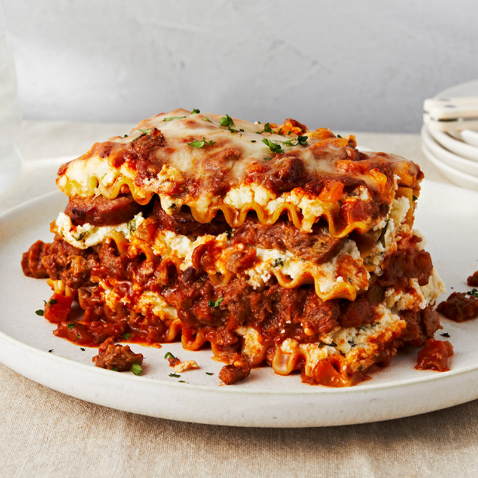

Perfect way to make a delicious lasagna

Ingredients
- Meat: 1 pound of mince meat.
- Onion: A diced onion is cooked until golden
colour.
- Canned tomatoes: 1/2 cans of crushed tomatoes.
- Fresh Herbs: For fresh flavour.
- Spices: such as oregano, basil, salt and black
pepper.
- Pasta sheets: Preferably the pre-heated lasagna
sheets.
- Cheese: this will be mozzarella cheese and
parmesan.
- Eggs: to make the cheese layer extra creamy.
Steps
- Cook the meat: Cook the ground meat in a
skillet until browned and crumbly. Add the onion and continue
cooking until it's translucent. Stir in the canned tomato
products, half of the parsley, garlic, basil, 1.5 teaspoons of
salt, oregano, and sugar.
- Make the cheese layer: Mix cottage cheese,
Parmesan cheese, eggs, the remaining parsley, the remaining
salt, and pepper in a bowl.
- Assemble the lasagna: Layer the ingredients
according to the recipe (starting with sauce and ending with
mozzarella) until the lasagna is assembled.
- Bake the lasagna: In an oven preheated to 375
degrees F, this homemade lasagna should be perfectly baked in
about 50 minutes (30-40 minutes covered, 5-10 minutes
uncovered).